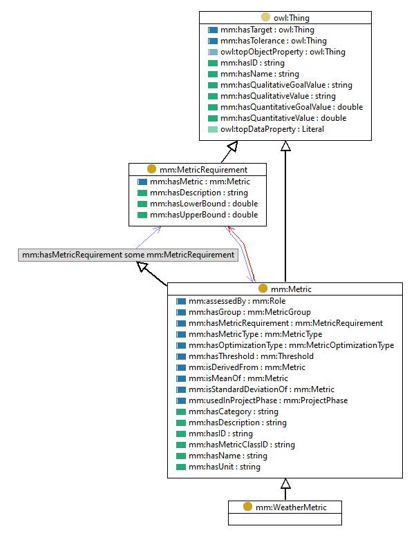

https://w3id.org/mm#WeatherMetric
Class 'Weather metric'

type
Class [owl:Class]
comment
A metric that is usually used in climatology or meteorology to assess weather conditions and changes.
label
Weather metric
subClassOf
Metric [mm:Metric]
References
as subClassOf (
Azimuth [mm:Azimuth]
,
Rainfall [mm:Rainfall]
,
Outdoor air quality
,
Outdoor light level
,
Outdoor relative humidity
,
Sunshine duration
,
Outdoor air pressure
,
Rainfall depth
,
Elevation [mm:Elevation]
,
CO2 concentration
,
Outdoor air temperature
,
Solar radiation
,
Dew point
,
Wind speed
)
Generated with
TopBraid Composer
by
TopQuadrant, Inc.